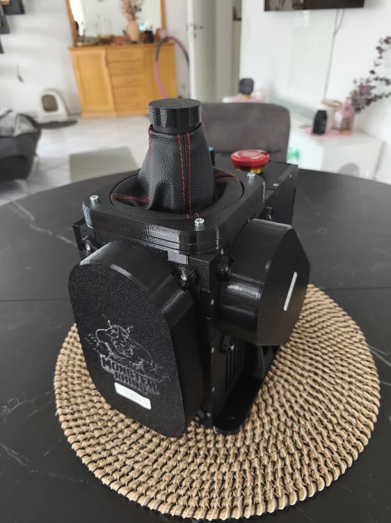

2. Monster Rhino¶

The “Monster” Rhino Kitbase is a third-party offering from SR-F_Winger, based on the work of @TheAmazinGreat. It uses the largest available VPforce DIY Motor Kit (86BLF04) to create a higher-torque Rhino build with more thermal headroom than the standard Rhino configuration.
This kit targets users who want more torque and cooling headroom than the standard Rhino, without sourcing all screws, cables, and hardware individually.
Motor Kit Not Included
The VPForce Motor Kit (86BLF04) must be ordered separately from VPForce.
2.1 Technical Specifications¶
Published and calculated values
The standard Rhino is officially rated at up to 9 N·m per axis. The ~12.4 N·m value in the comparison table below is the theoretical stick-side peak calculated from motor torque constant, 30 A drive current, and the official 75T/12T belt ratio before drivetrain losses and firmware limits. Many DIY Rhino variants use a 74T pulley instead.
2.1.1 Motors¶
| Parameter | Standard Rhino | Monster Rhino |
|---|---|---|
| Motor model | 57BLF03 | 86BLF04 |
| Motor series | 57 mm frame | 86 mm frame |
| Motor torque constant (Kt) | 0.066 N·m/A | 0.127 N·m/A |
| Drive current limit | 30 A | 30 A |
| Motor peak torque | 1.98 N·m | 3.81 N·m |
| Belt gear ratio | 75T/12T (~6.25:1) | 60T/15T (4:1) or 72T/15T (4.8:1) |
| Peak torque at stick | ~12.4 N·m | ~15.2 N·m (4:1) / ~18.3 N·m (4.8:1) |
2.1.2 Torque Output by Gear Ratio¶
The Monster Rhino base supports two gear ratio options using a 15T motor pulley paired with different gimbal pulleys:
| Belt Ratio | Gimbal Pulley | Gear Reduction | Peak Torque per Axis |
|---|---|---|---|
| 60T / 15T | 60 tooth | 4:1 | ~15.2 N·m |
| 72T / 15T | 72 tooth | 4.8:1 | ~18.3 N·m |
Which ratio to choose?
The 72T / 15T ratio delivers the maximum calculated peak torque but has slightly shorter physical stick travel for a given belt length. The 60T / 15T ratio offers a more balanced compromise between torque and travel range.
2.1.3 Thermal Performance¶
The 86BLF04 motor’s larger frame provides substantially greater thermal mass and surface area than the 57-series motors in a standard Rhino. In practice, this usually means:
- Higher continuous torque before thermal throttling activates
- Longer sustained high-force operation in demanding scenarios
- More headroom before active cooling needs to intervene
For a detailed discussion of the thermal advantages of 86-series motors, see TheAmazinGreat 86 Motor FFB Base.
2.2 Kit Variants¶
SR-F_Winger offers two versions of the Monster Rhino Kitbase:
2.2.1 A) PREMIUM ISSUE¶
- Price: 800€ + VAT + shipping
- Gimbal: PA12
- Recommended For: Users who want to use extreme extensions, like helicopter goosenecks.
- Availability: This version requires pre-ordering and has a delivery time of around 3 weeks.
2.2.2 B) STANDARD ISSUE¶
- Price: 550€ + VAT + shipping
- Gimbal: PETG (100% infill)
- Recommended For: Use with extensions up to 20cm.
- Availability: This version is stocked more often, with new stock announced frequently.
2.3 Common Features¶
Both kit variants include the following:
- Grip-Connector: Made from PA12, compatible with the original VPForce CNC Aluminium Upgrade.
- Housing: Printed from 100% infill PETG on high-quality Bambu printers.
- Power: XT60 power connector, heavy-duty high-performance internal power cables.
- Inserts: Metal Ruthex threaded inserts.
- Safety: Includes an emergency stop button.
2.4 Recent Updates¶
The latest iteration of the Monster Rhino now includes:
- Bolt-on belt covers (included at no extra charge).
- The USB and XT60 connectors have been moved to the front of the base.
2.5 Ordering & Shipping¶
To inquire about pricing and place an order, you can contact:
- SR-F_Winger (Discord:
SR-F_Winger_[73]_David) - Email: david_1@gmx.de
- Forum: DCS World Forum thread
VPforce Motor Kit Discount
When you purchase a Monster Rhino Kitbase from SR-F_Winger, you will receive an individual VPforce discount code for 10% off the “2x86BLF04+USB” DIY Kit from VPforce.
Important details:
- Discount code is linked to your Monster Rhino Kitbase order
- Provided after your Monster Rhino Kitbase order is fulfilled
- Valid for one-time use only
- Applies exclusively to the VPforce 2x86BLF04+USB motor kit
2.5.1 Shipping Rates (Approximate)¶
| Region | Price | Notes |
|---|---|---|
| USA | 47.99€ | Can be higher for express shipping. |
| Europe | ~20€ | |
| Germany | 6.90€ |
Shipping Note
Shipping fees may vary due to weight variances in available packaging materials.
Note on US Shipping
Shipping to the USA may require express shipping at a higher cost (about 95€). Please confirm current pricing with the seller.
2.6 Assembly Instructions¶
The base comes 95% pre-assembled. The following steps describe the final assembly process.
2.6.1 Prepare the Housing¶
- Remove the bottom and front lids, which are held in place by only 2 or 3 screws each. They are labeled with stickers for identification.
2.6.2 Install the Mainboard¶
- Locate the mainboard mount underneath the front lid area.
-
Mount the mainboard onto the mount and fasten it using the four pre-installed screws.
Need More Space?
If you need extra room to work, the lower part of the Emergency Stop switch can be temporarily detached by pressing its white plastic latch.
2.6.3 Install Motors and Electronics¶
-
Prepare Motor Cables: Before mounting the motors, attach and crimp the cables from the motor kit. It is impossible to reach the connectors after the motors are installed.
Note
The power cables for the motors are provided uncrimped so they can be cut to the correct length. It is strongly recommended to crimp wire-end ferrules onto the cables to ensure a secure connection. The other cables included in the kit are pre-crimped.
-
Mount the Motors:
- Mount the motors inside the case using the included M6 motor mount screws.
- Ensure the motors are rotated correctly within the housing, as shown in the assembly diagrams.
Correct Motor Rotation
The rotation of the motors is critical. Incorrect rotation can cause the cables to hit the outer walls, preventing you from properly tensioning the belts later.
-
Connect Electronics:
- Connect all electronic components to the mainboard according to the wiring diagram provided by the seller or the original guide.
Danger: Check Polarity
Verify correct polarity when connecting power cables. Reversing polarity can permanently destroy the mainboard and other electronic components. Plus (+) and minus (-) terminals are clearly labeled with stickers to prevent errors.
- All cables are bespoke and keyed, except for the main power cables (from the XT60 connector and Emergency Stop switch) and the fan connectors.
- The two fan connectors can be plugged into either fan header.
-
Pre-Closure Checks:
- Before closing the case, ensure that no cables are obstructing the fans.
- Make sure the Emergency Stop button is in the un-pressed (released) position.
2.6.4 Final Assembly¶
- Test Electronics: After completing the wiring, perform an initial test to confirm that all electronics function as expected. You can test the fans using the “Debug” tab in the VPForce software.
- Cable Management: Tidy up the internal wiring using the included zip ties.
- Close the Housing:
- Re-install the vertical reinforcers as shown in the seller’s reference guide.
- Secure the front and bottom lids with all the included case screws.
- When closing the front cover, double-check that no cables are rubbing against the front intake fan.
2.6.5 Attach Motor Pulleys¶
- Attach the included 15T metal pulleys to the motor axles, following the seller’s reference diagram.
- When placing the pulley onto the motor axle, ensure the grub screws will rest on one of the flattened portions of the axle when tightened. This prevents the pulley from slipping.
-
Apply Loctite or a similar thread-locking fluid to the grub screws before tightening them to prevent them from loosening over time.
Pulley Installation
If the pulley fits tightly, use a plastic or rubber mallet to gently tap it into place. Do not slide it too far down the axle, as this can cause belt alignment issues later.
2.6.6 Calibration and Setup¶
- Belt Installation and Calibration: Attach the belts and perform a full system calibration. Please follow the official calibration guide included in the original Protomaker assembly guide (a QR code should be provided by the seller).
- Software Configuration:
- In the VPForce configurator, select the grip you are using. Adapters are available for VKB grips (which require a separate Blackbox) and Winwing grips.
- Configure the two potentiometers with your desired functions.
- Mount and Fly: Mount the base to your rig and enjoy!
2.7 Troubleshooting¶
2.7.1 Belt Cannot Be Tensioned Correctly¶
Symptom: The belt cannot be tensioned cleanly, or it rubs the housing.
Cause: The motor is rotated incorrectly, or the pulley position is not aligned.
Resolution: Re-check motor orientation inside the case and verify pulley placement before closing the housing.
2.7.2 Fans Do Not Spin During Testing¶
Symptom: The fans do not respond during the initial electronics test.
Cause: A fan connector is loose, connected incorrectly, or blocked by cabling.
Resolution: Confirm both fan connectors are fully seated, make sure no cable is obstructing the fan blades, and test again from the VPforce software.
2.7.3 Motor or Mainboard Does Not Power Up¶
Symptom: The electronics remain unpowered after wiring is complete.
Cause: Reversed main power polarity, an unseated power connection, or the E-stop button is engaged.
Resolution: Verify polarity at every main power connection, confirm the E-stop is released, and inspect the XT60 and mainboard power wiring before applying power again.
Important Check for Low Throw Limiters
In the rare case that you use extremely low throw limiters, ensure the grip cable that runs down the front into the gimbal does not rub against the limiter. If it does, you can raise the limiter a few millimeters using washers to create clearance.